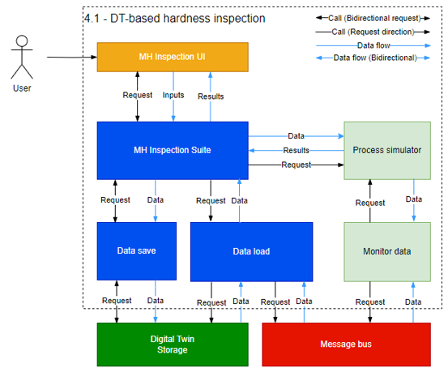
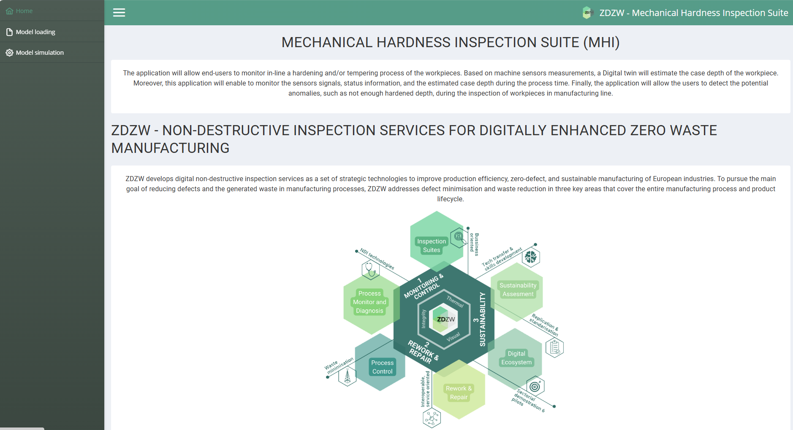
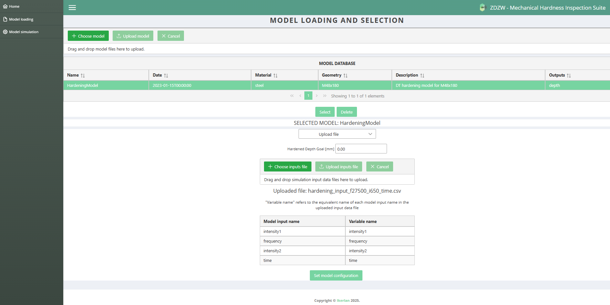
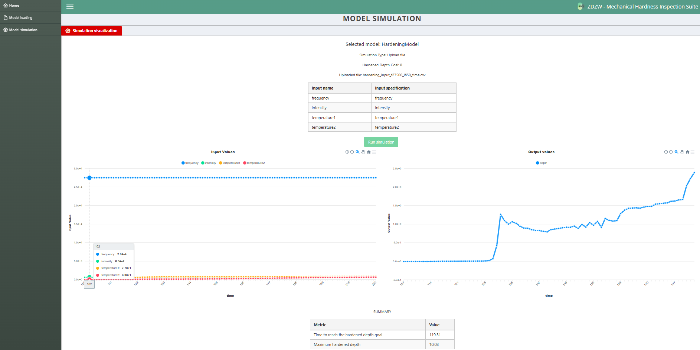

Mechanical Hardness Inspector
General Description
The application will allow end-users to monitor in-line a hardening and/or tempering process of the workpieces. Based on machine sensors measurements, a Digital twin will estimate the case depth of the workpiece. Moreover, this application will enable to monitor the sensors signals, status information, and the estimated case depth during the process time. Finally, the application will allow the users to detect the potential anomalies, such as not enough hardened depth, during the inspection of workpieces in manufacturing line.
Top Ten Functionalities
- In-line monitoring of several process parameters (Tª, Frequency, Current…): the app is able to monitor several process parameters in real time.
- Data uploading to cloud: Machine sensor data will be automatically uploaded to the cloud for the app to read the data and perform inspections.
- Cloud based data management: the data uploaded to the cloud will be managed to suit the requirements from the app.
- In-line mechanical hardness estimation in Induction hardening: During induction hardening, the achieved hardness depth will be estimated with real time data.
- In-line mechanical hardness estimation in Induction tempering: During induction tempering, the achieved hardness will be estimated with real time data.
- Set an alarm to stop the process out of quality limits: The app will provide the user with the opportunity to define process limits that will raise an alarm to stop the process,
- Show the summary of the process results on interface: The app will show a summary of the most important achieved results (case depth, maximum hardness, hardness evolution) on the interface.
- Unitary reporting of process information and hardness results: The specific details for each manufactured component will be shown on the app interface.
- Export registered datasets for further studies: The user will be able to export the result datasets to analyse externally.
- Data acquisition for off-line retraining of the DT: the exported result datasets can be used to train further Digital Twins or improve the Digital Twin currently in use.
Architecture Diagram
The high level Architecture diagram for the application:

Image Overview

Computation Requirements
Some minimum requirements must be ensured for the app usage: * 4 CPUs * 6-8 GB RAM * 32 GB Storage
The amount of storage space needed will depend on the number of exported datasets.
The recommended method to install and run the app is by building a Docker image and running the application as a Docker container. In that case, the software requirements are given by Docker:
https://docs.docker.com/desktop/install/windows-install/
https://docs.docker.com/desktop/install/mac-install/
https://docs.docker.com/desktop/install/linux-install/
Installation Procedure
The preferred way to install the software is by building a Docker image. Optionally the application can be installed manually.
Installation using Docker
- Clone the repository or download the code as a zip file.
- Go to local repository folder or to the unzipped folder.
-
Modify the data about the smart contract, the API key, and the organization in the file orchestration/docker/docker-compose.yml.
node-red: image: ghcr.io/zdzw-eu/ae_mhi_nodered:latest container_name: 'zdzw-node-red' environment: - TZ=Europe/Madrid - SmartContract=XXX - Organization=XXX - API_key=XXX* Go to the orchestration folder and build the docker image.
Manual installation
The application can also be installed by installing the backend and the frontend individually. * Backend
The backend is installed by issuing the following commands on the app root directory:
```bash
cd subsystems/backend
pip install -r requirements.txt --no-cache-dir
```
-
Frontend
The frontend is installed by issuing the following commands on the app root directory:
Installation on Kubernetes
- In the Kubernetes platform using helm charts. In order to run the following command, the user must have previously installed k3s (Kubernetes) on their Linux system. Just like with Docker Compose, the user needs to configure the smart contract, the API key, and the organization in the command itself:
helm install ae-ia oci://ghcr.io/zdzw-eu/mechanical-hardness-inspector --version 0.1.0 --set frontend.service.nodePort=30084 --set SmartContract="XXX" --set Organization="XXX" --set Api_key="XXX"
How To Use
The application has to be run differently based on the installation method used.
Running the app using Docker
During the installation a docker image with the app was built. A container can be started by:
On Windows, the docker desktop daemon must be running before the previous command could be issued. This command starts services for the backend and the frontend on the localhost.Running the app manually
To run the app manualy the back end and the front end have to be instantiated as separate processes.
-
The backend is run locally by issuing the following commands. From the root directory of the app, execute:
The previous command runs the app on the default flask web server. For a production deployment a WSGI dedicated server should be used instead. The application can be served on gunicorn (not compatible con windows) or waitress:- Gunicorn
- Waitress This procedures deploys the backend server on the port 5000 of the local host.
-
To start the front end on the local host, run the following commands from the root directory of the app:
User Manual
This app consists of 2 main windows: Model loading and Model Simulation.

In the 'Model loading' tab, the user can load a specific Digital Twin into the application in .pt format. Once the model is loaded, it must be selected in the 'Model Database' table.
There are two types of simulation: the individual upload of a single file (Upload file) and the streaming simulation of files sent via MQTT protocol to the app (Streaming). Once the desired simulation type is selected, the necessary additional information must be completed: upload the file in the case of 'Upload File' and configure the broker parameters to send messages via MQTT in 'Streaming'.
In both cases, it is also possible to specify a target for the Hardened Depth, to later evaluate how long it takes to reach it according to the simulation.

In the 'Model simulation' window, all that’s needed is to click the 'Run simulation' button. For both types of simulation, two graphs will be displayed: one with the sensor input values and another with the value of the hardened layer obtained, all of them over time. Additionally, in each case, the time taken to reach the specified hardened layer, according to the simulation, will also be shown. The app allows exporting this data to a .txt file.